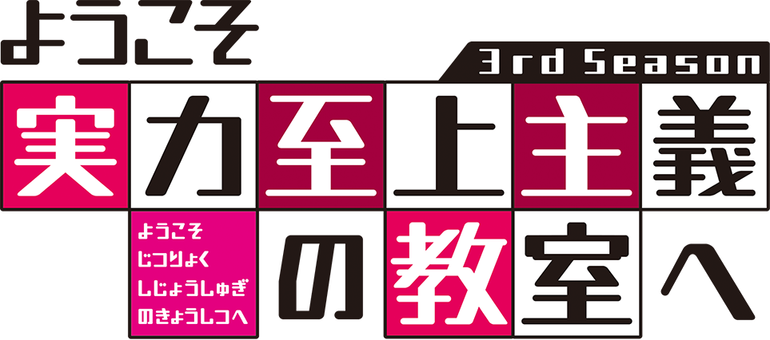
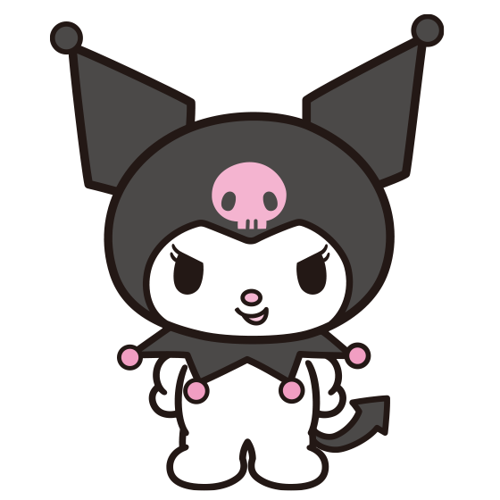
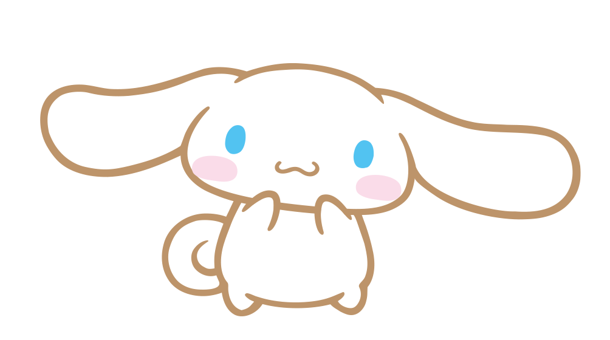
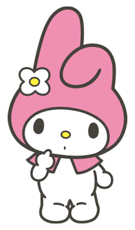

ANHS // S-SYSTEM
OAA TERMINAL v2.4

✦ ✧ ★ ✿ ✧ ✦



⚡ COTE S-SYSTEM
×
SANRIO 三麗鷗 🎀
ClassQuant Hub
歡迎來到實力至上主義教室 × Sanrio 聯名教學戰情室
系統初始化與載入教室模組中 (20%)…
偵測到手機舊版離線快取異常（您的班級名單與成績資料 100% 安全未遺失）
載入完成後即開放一鍵登入教室 • v2.4.0
🏛️
ADVANCED NURTURING HIGH SCHOOL
S-SYSTEM // 內部機密終端
綾小路 清隆
OAA: S+
D CLASS // 學生編號 S01T004721
【第1季 最終話結尾白室獨白】
語錄 1/8
「所有人對我來說，都只不過是道具而已。不管是堀北，還是櫛田。過程怎樣都無所謂，只要最後贏的人是我，那就夠了。」